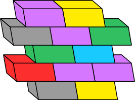

I have experience working for
and also freelancing

& doing passionate
open-source
projects in my free time
I began creating games using game 🎮 engines when I was 15 and got fascinated 🤯 by the endless possibilities of developing applications 📱 and how creative 🧠 someone can get in that process. I made games in the next few years and even though none of them made it to production, it was a good learning experience for me. I took a break for a while, focused on my studies 🤓 and parallelly started writing tech blogs & remixing songs 🎹 before I launched my first project, a discord chatbot 🤖 at the age of 19. Since then, I have been developing a lot of cool stuff most of which can be found on my GitHub. 🥹
In my sophomore, I interned at a small pharmaceutical 💊 company named Niyamaa for whom I developed a website. Then in my pre-final year, I got the privilege to work as Full Stack Developer 🌐 Intern for Ticketh.io, a web3 startup and later as an Engineering 🛠️ Intern in Balkan.id, an IGA (Identity Governance and Administration) startup based in Austin. I am currently working as a Software Developer 🕊️ at Barclays.